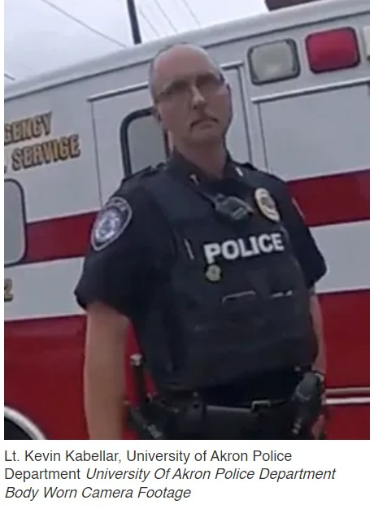

Timeline photos
Lt. Kevin Kabellar of the The University of Akron police is a racist monster and needs to be fired.
Kabellar has accumulated nearly a dozen citizen complaints, many of them for use of force, in his 26 years as an officer in Akron and at the university.
In 2009, a dispatcher complained that Kabellar's "tone and demeanor was very rude and disrespectful" during a conversation about a mix-up with equipment. Kabellar told the woman to stop "running your mouth" and mind her "own business."
Also that year, a student complained about her roommate's guests not properly signing in to visit the dorm room. While arguing with one of the guests, Kabellar referred to the young Black women as having a "ghetto attitude," according to the roommate, who later filed a complaint against the officer.
But of course nothing is going to happen to him:
A commanding officer at the University of Akron must undergo professional counseling to “control (his) emotions during stressful situations” after using “unjustified” force on a handcuffed man inside a campus police garage.
He was put on paid leave July 18 and returned to active duty July 29.